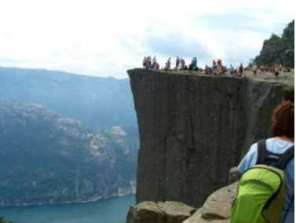
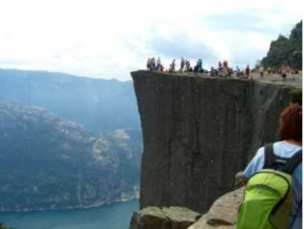

The Walk
The walk to the Pulpit Rock will take you approximately two hours, give or take an hour depending on the weather conditions and your physical shape.
The walk to the Pulpit Rock will take you approximately two hours, give or take an hour depending on the weather conditions and your physical shape.
